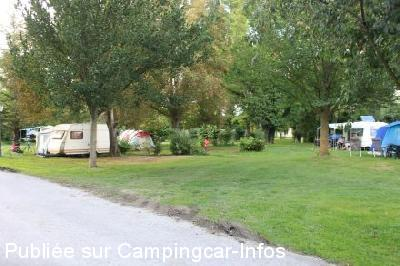
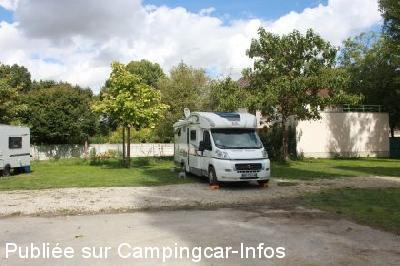

ACS = Aire de services sur camping acceptant le passage pour les services de :
PONT SAINTE MARIE
(N° 573)
Accès/adresse :
7 rue Roger Salengro, N60
Camping municipal Labourat ***
10150 PONT SAINTE MARIE
Camping municipal Labourat ***
10150 PONT SAINTE MARIE
Latitude : (Nord) 48.31102° Décimaux ou 48° 18′ 39′′
Longitude : (Est) 4.09728° Décimaux ou 4° 5′ 50′′
Tarif : 2014
Emplacement : 6,90 à 9,20 €
Personne + 13 ans : 5,20 à 6,20 €
Enfant 2 à 13 ans : 3,40 à 4,40 €
Électricité : 3,20 €
Animal : 1,15 €
Taxe de séjour + 13 ans : 0,25 €
Services C-C de passage : 3,50 €
Services :


Piscine
Autres informations :
Ouvert du 1/04 au 15/10
110 emplacements
Tel +33(0)325 810 264
http://www.troyescamping.net/

Le 28/08/2014 par JP 73

Le 28/08/2014 par JP 73
de
JP 73
le 28/08/2014 :
Beau camping emplacements spacieux plats, Wifi gratuite au bar
Beau camping emplacements spacieux plats, Wifi gratuite au bar
de
Olivier
le 13/08/2014 :
bonjour,
Nous avons passez 3 jours au camping en juin. L'accueil est vraiment très bon et la nouvelle équipe (toute jeune) est très dynamique. En vélo, le centre ville et les magasins d'usines sont à 10-15 min.Le prix n'est pas excessif (environ 19€) compte tenu de la qualité des services. Emplacements très spacieux et parfaitement entretenus. La piscine, le billard, le baby foot est en accès libre, ce qui est extrêmement rare dans les camping. La cerise sur le gâteau : du papier toilette dans les WC !
Nous recommandons vivement ce camping. Merci à l'équipe pour leur accueil et leur renseignements.
bonjour,
Nous avons passez 3 jours au camping en juin. L'accueil est vraiment très bon et la nouvelle équipe (toute jeune) est très dynamique. En vélo, le centre ville et les magasins d'usines sont à 10-15 min.Le prix n'est pas excessif (environ 19€) compte tenu de la qualité des services. Emplacements très spacieux et parfaitement entretenus. La piscine, le billard, le baby foot est en accès libre, ce qui est extrêmement rare dans les camping. La cerise sur le gâteau : du papier toilette dans les WC !
Nous recommandons vivement ce camping. Merci à l'équipe pour leur accueil et leur renseignements.
de
jlch 57
le 27/04/2013 :
Bonjour,
De passage dans ce camping de Troyes,bon emplacement sur
herbe,sanitaire propre,pas de remarques si ce n'est le prix 21£ un peu excessif pour la saison,vu que les installations ne fonctionne pas toutes.
Bonjour,
De passage dans ce camping de Troyes,bon emplacement sur
herbe,sanitaire propre,pas de remarques si ce n'est le prix 21£ un peu excessif pour la saison,vu que les installations ne fonctionne pas toutes.
de
Frédéric
le 04/06/2008 :
Bonjour,
Nous avons fait escale dans ce camping le 31 mai 2008. Les tarifs sont désormais de
6 euros pour l'emplacement, 4euros 50 par personne. Les emplacements stabilisés
utilisables par temps humide sont très rares et non délimités. Ils sont tous très
rapidement occupés ( 3 emplacements stabilisés sur un total de 104 ! ). L'entretien
des arbres laisse à désirer, de ce fait les branches basses touchent la capucine sur
le chemin périphérique du camping.
En dépit de cela, du fait de sa situation à 2 km du centre de Troyes et de ses
magasins d'usines, ce camping est très fréquenté, principalement par des touristes
étrangers en caravanes.
Les sanitaires sont propres, il est possible de faire son plein d'eau eu de vidanger
les WC chimiques, mais il n'y a pas de grille de vidange des eau grises accessible
avec le véhicule.
Cordialement Antiskid
Bonjour,
Nous avons fait escale dans ce camping le 31 mai 2008. Les tarifs sont désormais de
6 euros pour l'emplacement, 4euros 50 par personne. Les emplacements stabilisés
utilisables par temps humide sont très rares et non délimités. Ils sont tous très
rapidement occupés ( 3 emplacements stabilisés sur un total de 104 ! ). L'entretien
des arbres laisse à désirer, de ce fait les branches basses touchent la capucine sur
le chemin périphérique du camping.
En dépit de cela, du fait de sa situation à 2 km du centre de Troyes et de ses
magasins d'usines, ce camping est très fréquenté, principalement par des touristes
étrangers en caravanes.
Les sanitaires sont propres, il est possible de faire son plein d'eau eu de vidanger
les WC chimiques, mais il n'y a pas de grille de vidange des eau grises accessible
avec le véhicule.
Cordialement Antiskid
de
BABAR 59
le 01/10/2006 :
Ayant fréquenté à plusieurs reprises ce camping municipal, j'y retourne toujours volontiers car les avantages sont nombreux : ouverture tardive (possibilité d'arriver jusqu'à 21 h), emplacements stabilisés pour cc, sanitaires très propres, borne de services cc, situation calme, à promixité immédiate du centre commercial Mac Arthur Glen (très apprécié des épouses)
Ayant fréquenté à plusieurs reprises ce camping municipal, j'y retourne toujours volontiers car les avantages sont nombreux : ouverture tardive (possibilité d'arriver jusqu'à 21 h), emplacements stabilisés pour cc, sanitaires très propres, borne de services cc, situation calme, à promixité immédiate du centre commercial Mac Arthur Glen (très apprécié des épouses)